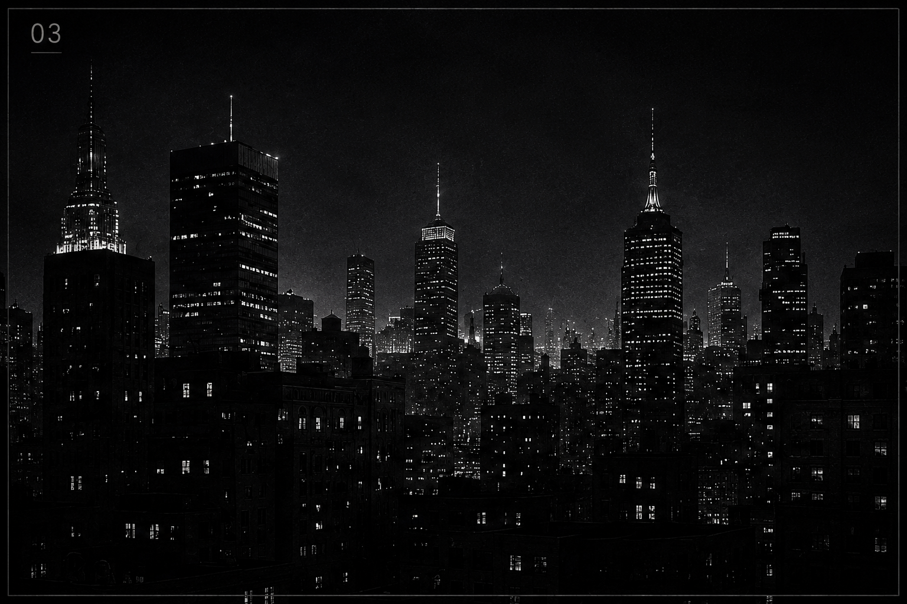

Independent Consultant Detective
"When solving a case,
I don't act on emotion.
I act on facts.
Until the truth reveals itself."
| Name | Ryuzaki |
| Known As | L |
| Occupation | Detective |
| Base | Unknown |
| Notes | Low Profile |
An enigmatic figure operating at the intersection of logic and intuition. With a 92% case resolution rate spanning over a decade, L Lawliet applies systematic analytical methodology to the world's most impossible cases. No case too complex. No pattern too obscure.
Operating under strict anonymity, direct engagement is strictly by referral through authorized channels. All communication is encrypted and monitored.
"When solving a case,
I don't act on emotion.
I act on facts. Until
the truth reveals itself."
ARCHIVE DATABASE

THE L ANALYSIS
Every investigation begins with observation. Human behavior leaves patterns behind. Speech timing, emotional shifts, routines, inconsistencies and silence reveal more than direct evidence.
My analysis framework isolates anomalies, tracks psychological intent and reconstructs hidden motives through logical deduction. Facts first. Emotion never.
Detect emotional inconsistencies, manipulation patterns and deception.
Cross-reference fragmented data to reveal hidden connections.
Predict actions through motive, pressure points and cognitive habits.
Identify impossible variables ignored by conventional analysis.
Five core pillars form the foundation of every investigation. Logic is the compass. Facts are the map. And deduction is the path to truth.
— The systematic elimination of impossibilities.
Every game reveals a pattern.Every pattern reveals intent.
If you have information that can help from justice, get in touch. All communications are secured and end-to-end encrypted. Response not guaranteed. Response not expected. Truth is.
All communications are monitored and end-to-end confidential.